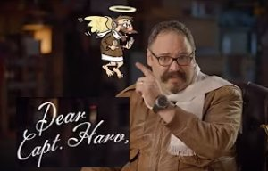

Conviction
doesn't clock out.
The work Harvey does outside of Redbird isn't a side hustle — it's the same mission running on a different track. When you believe something strongly enough, you build toward it on your own time too. These projects exist because the GA community needed them, and waiting for someone else to build them wasn't an option.
A companion safety seminar developed in collaboration with commercial pilot and psychotherapist Jolie Lucas — designed for the non-pilot passengers who fly with the people they love.
Ongoing educational content produced with Jolie Lucas, educating and inspiring both pilots and their non-pilot companions.
A monthly live broadcast co-hosted with commercial pilot and psychotherapist Jolie Lucas — exploring aeronautical decision-making, human factors, and safety culture for pilots at every level. FAA WINGS and AMT/IA credit eligible. If you want to see how Harvey thinks and communicates in real time, this is where to look.

Before you fly, are you actually fit to fly? Second Opinion is a pilot self-assessment app that combines three quick cognitive and reflex acuity tests with a structured Flight Risk Assessment Tool — giving pilots a data-informed answer to the question every preflight briefing should include but rarely does. Built on the premise that the most dangerous variable in any flight is the one sitting in the left seat, and that pilots deserve a tool that takes that seriously.
Engaging educational resources for pilots committed to proficiency, safety, and remaining true to 91.103: Know Everything. All modules are eligible for WINGS credit.
A safety video series produced for Redbird — addressing real pilot questions with candor, humor, and hard-won operational perspective.

Cost-free safety education produced as an FAA certified Training Provider — delivered to the GA community as a public good.